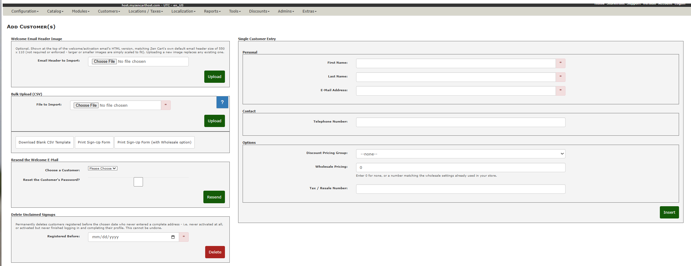
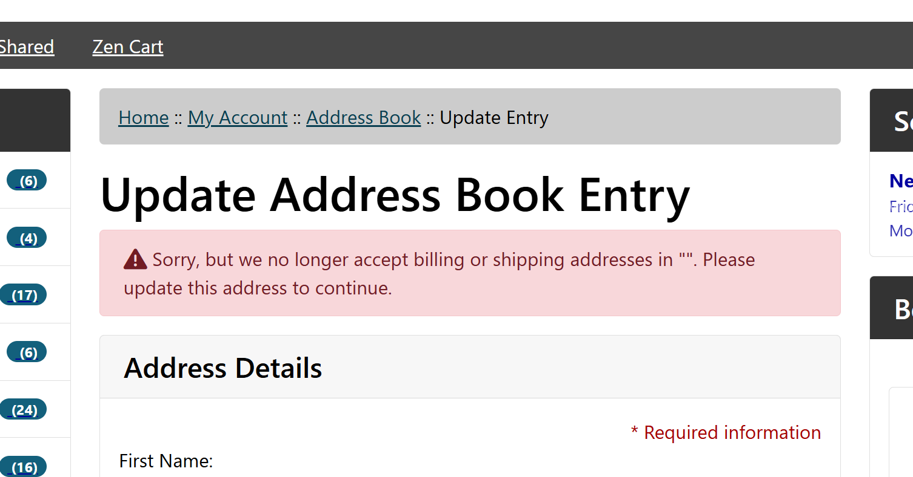
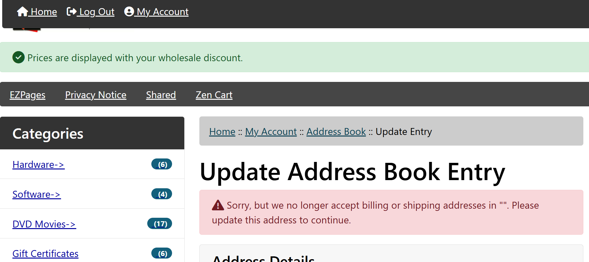
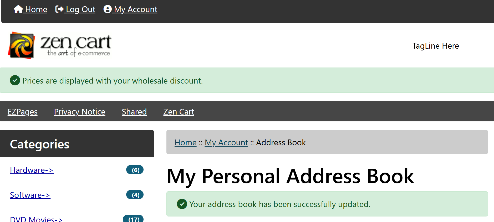

This software is provided for your use under the GNU General Public License.
This mod is based on the excellent foundation created by lat9 in the mod, add_customers_from_admin, which was unfortunately rendered inoperable by changes in both Zen Cart 2.0.0 and 2.2.0. This mod expands on and updates that mod as a complete new zc_plugin compatible with Zen Cart versions 2.0.0 through 3.0.0 and PHP versions 8.0 through 8.5.
This plugin is built for capturing customers with minimal friction — for example, at a public event — and optionally offering them a discount, a wholesale account, or both. An admin user enters just a customer's name and email (one-by-one or via CSV bulk upload) - phone is optional, and can be added later by the customer - and optionally assigns a Customer Group Pricing group and/or a wholesale level. The plugin then creates the account in a pending state and emails the customer an activation link. Clicking that link fully authorizes the account and sends the customer to your storefront's own login page - from there it's a completely standard Zen Cart login, and the customer fills in their address and anything else your store requires using Zen Cart's own account pages, the same as any other customer. Once you have installed the plugin (see below), you can access it via your admin's Customers->Add Customer(s). The initial screen for the tool looks like this:

The top left-hand side of the tool is used to perform a bulk-upload of customers via a Comma-Separated Values (CSV) file; the bottom left-hand side of the tool is used to resend a customer their activation email (and, optionally, reset their password); and the right-hand side of the tool is used to enter customers one-by-one.
The Bulk Upload feature allows you to create a CSV file on another computer and then Upload that file to perform a "Bulk Upload" of customers into your database. That file's format is described by add_customers_formatting_csv.html (opens in a new window), or use the Download Blank CSV Template link below the upload form to get a ready-to-fill-in file with the correct header row.
Each row is checked and, if it's error-free, inserted right away - a bad row (e.g. a typo'd email, or one that duplicates an existing customer) is flagged and skipped, but doesn't hold up any other row in the file. Any errors are flagged by line number so you can fix just those rows and re-upload them separately.
Below the CSV upload form are two links, Print Sign-Up Form and Print Sign-Up Form (with Wholesale option) (the latter only shown if Configuration->My Store->Wholesale Pricing is enabled). These open static PDF files - a roster-style sheet with one line per person (First Name / Last Name / Email / Phone, plus a Wholesale Yes/No checkbox column on the wholesale version) that customers fill in by hand at an event. Zen Cart doesn't include a PDF-generation library, so these PDFs are not generated by this plugin - you supply them yourself as signup_form.pdf and signup_form_wholesale.pdf in the plugin's own pdf/ folder (see that folder's README.txt for the agreed design). Until both files are present, clicking either link shows an on-page notice instead of a download. These forms match the CSV and single-entry form exactly: name, email, and phone (plus a wholesale checkbox on the wholesale version) - no address, since address is always the customer's own responsibility to enter, at activation - see "Entering Customers One-by-One" below.
The welcome/activation email's HTML version can show a header banner at the top, the same way Zen Cart core's own emails often do (typically a 550 x 110, 72 DPI images/header.jpg). This isn't required and nothing is shown if you don't supply one. Use the Email Header to Import: field (below the Bulk Upload area) to upload a JPG, PNG, GIF, or WebP image - it's shown at a fixed width so an unusually-sized image won't break the email layout, but its actual dimensions aren't validated - matching Zen Cart's 550 x 110 is a suggestion, not a requirement. Uploading a new image replaces any existing one; the section shows a preview of whichever one is currently active. It only affects the HTML version of the email; plain-text recipients see no difference.
If you'd rather place the file yourself (e.g. via FTP), it can go directly in the plugin's own email/ folder as header.jpg/.jpeg/.png/.gif/.webp - see that folder's README.txt. Either method ends up in the same place.
Use this part of the tool to re-send the selected customer their activation email, optionally resetting their login password at the same time. This also generates a fresh activation link (the previous one stops working). Choose a customer from the drop-down list of all customers who haven't yet completed activation, optionally checking the box to reset their login password and then click "Resend".
Note: If every customer has already completed activation, the drop-down box will contain only "Please Choose" and no customer-selection will be possible.
Since activating no longer gates on the customer actually finishing their profile (see "How Activation Works" above), some signups will inevitably never come back to fill in an address at all - whether they never clicked the activation link, or clicked it and never got around to logging in. This tool cleans those up: pick a date, and every customer registered before it who has never had a complete address on file (no street address and no post code, on any address they have) is permanently deleted, along with their token, cart, and address-book rows. A customer who ever placed an order can't match this - Zen Cart's own checkout already requires a complete address before it will let anyone check out - so there's no risk of deleting someone with real order history. This cannot be undone, and there is no preview step; a confirmation prompt is the only safety net before deletion, so double-check the date before confirming.
This form is intentionally minimal: just enough to create a pending account and get an activation email out. First Name, Last Name, and Email are the only required fields - even Telephone is optional here, since it's only used to reach the customer and they can add or correct it themselves at activation. Every added field beyond name/email/phone is time an admin spends away from doing business, and every field asked for up front is one more thing a wary customer has to hand over before they've decided they trust you. Address is not collected here at all - it's billing/shipping-critical information, so it's left entirely to the customer to enter (and be responsible for) when they complete activation; see "How Activation Works" below.
| Field Name | Description |
|---|---|
| First Name | Required. Its minimum acceptable length is controlled by Minimum Values->First Name. |
| Last Name | Required. Its minimum acceptable length is controlled by Minimum Values->Last Name. |
| E-Mail Address | Required. Its minimum acceptable length is controlled by Minimum Values->Email Address. The value must be a "proper" email address and must not already be used by another customer in your database. |
| Telephone | Optional - it can be left blank entirely. If a value is given, it's validated as a "world phone number". Either way, the customer can add or correct it themselves after logging in, via My Account. |
| Discount Pricing Group | Optional. The drop-down menu contains all discount pricing groups you have created using your admin's Customers->Group Pricing tool. If no pricing groups exist, only "-none-" is available. |
| Wholesale | Only shown if Configuration->My Store->Wholesale Pricing is set to something other than false. A plain number (matches the same field on your admin's Customers edit screen) - enter 0 for none, or a number matching the wholesale settings already used in your store. Zen Cart core defines no fixed list of what each number means; that's entirely up to your own pricing setup. |
| Tax / Resale Number | Only shown alongside Wholesale. Always optional - not every store needs to collect one. |
There's no coupon-assignment field here - a coupon can't currently be attached to a customer created by this plugin at all (that capability may return later as an option on the Resend the Activation E-Mail tool, once you already have a customer on hand to attach it to). Discount Pricing Group is different: when assigned, it's correctly applied to the customer's pricing right away, same as it would be for any customer in that group. The only gap is that Zen Cart core has no on-site way of telling the customer about it - unlike Wholesale, which core does confirm at login and after an address update (see "How Activation Works" below), a Group Pricing customer only ever hears about their discount in the one-time welcome email. Hopefully a future Zen Cart core update adds an equivalent on-site notice for Group Pricing, matching Wholesale.
The CSV bulk-upload path is just as minimal - see add_customers_formatting_csv.html for the full column list. It never includes address, tax/resale number, or any of the other fields covered below - those are the customer's own responsibility, entered themselves after activating.
Every customer added through this plugin - one-by-one or via CSV - starts out pending (able to browse with prices, but not able to complete a purchase) and is emailed an activation link, along with a summary of any pricing group and/or wholesale level you assigned, and their auto-generated login password. This plugin does not use Zen Cart core's own (v2.2.0-and-later-only) account-activation-token system, so this behavior is identical across the whole v2.0.0-v3.0.0 range this plugin supports.
Clicking the link activates the account immediately (fully authorized, same as any other approved customer) and sends the customer straight to your storefront's own login page, with that same summary shown as a one-time notice. From there it's a completely standard Zen Cart login - the customer signs in with the password from their email, using your store's own, unmodified login/account/address-book pages for everything else (address, phone corrections, gender, date of birth, company, and so on, per whatever your store's own Configuration requires). This plugin adds nothing of its own to that part of the experience and needs no catalog page or template to make it work - it's Zen Cart doing what it already does for every other customer.
Since this plugin never collects an address up front, the customer's first login typically lands them on core's own address-book warning, which refuses to accept the still-blank default address. This is entirely Zen Cart core's own validation, not anything this plugin adds - but it does the job of getting the customer's attention:

A customer who was given a wholesale level also sees core's own built-in wholesale pricing notice once they're browsing:

...and once they've updated their address, their account reflects wholesale pricing normally from then on, the same as any other wholesale customer:

Note: Zen Cart core has no equivalent built-in notice for a plain Customer Group Pricing discount the way it does for wholesale - a Group Pricing customer is only ever told about their discount in the one-time welcome email, with no ongoing on-site confirmation of it anywhere. If/when Zen Cart core adds one, this readme (and its screenshots) will be updated to match.
As with any customer, a complete address is required before Zen Cart's own checkout will let them place an order.
If a customer's activation link expires (24 hours) or is lost, use the Resend the Activation E-Mail section of this tool to send a new one.
This plugin is packaged as a Zen Cart encapsulated plugin. It installs into your store's root - the folder that also contains YOUR_ADMIN, includes/, email/, logs/, and (since every store already has other encapsulated plugins) a zc_plugins/ folder of its own. No files are copied into or edited inside YOUR_ADMIN itself. As always, back up your cart's database and files before making any changes.
zc_plugins/ folder, with this plugin's files inside it at zc_plugins/AdminAddUser/v1.1.0/. Upload/copy that entire zc_plugins/ folder into your store's root, merging it into the zc_plugins/ folder that's already there. When you're done, your store's zc_plugins/ directory should contain an AdminAddUser folder alongside whatever other plugins you already have installed - that's how you can confirm the copy landed in the right place.No upgrade is needed with this initial installation.
This plugin also includes the following files that are not part of the installed plugin itself:
In your admin, go to Tools->Install Plugins, uninstall "Admin Add Customer", then delete the zc_plugins/AdminAddUser/ folder. Uninstalling drops this plugin's own activation-token table, but leaves any customers_tax_number data already collected on customer records in place - that's real business data, not something an uninstall should delete.
This plugin is based on the Add Customers from Admin add-on developed last for version 1.5.7 of Zen Cart®. Core changes in Zen Cart® versions 2.0.0 and 2.2.0 unfortunately rendered the older version incompatible. The new mod brings back the option to add a customer from within the Admin and much more.
YOUR_ADMIN, includes/, email/, logs/, and an existing zc_plugins/ folder) and that the entire provided zc_plugins/ folder - not just its contents - is what gets merged into it.zc_plugins/AdminAddUser/v1.0.0/...), which would have quietly produced a broken image link the moment the version folder was renamed for this very release. It's now derived from the actual on-disk folder names instead, so it can't go stale on future version bumps.master (dropping v1.5.x support; there is no separate v2.3.0 release to target).zc_plugins/AdminAddUser/, installed/uninstalled via the admin's Plugin Manager. No files are copied into or overwrite anything in YOUR_ADMIN.wholesale_level), using core's own customers_whole field (built in since Zen Cart v2.0.0) and gated on the store's existing Wholesale Pricing setting - no new Configuration page added. Zen Cart core defines no fixed list of what each level means; it's a plain number (0 for none) matching whatever pricing scheme the store already has in place.Customers->Add Customer(s) now adds a storefront page (reached via the activation email link) where the customer reviews their assigned group/wholesale level and completes whatever your store's configuration requires. This plugin uses its own activation-token table rather than Zen Cart core's built-in one (that one only exists since v2.2.0).customers table insert was missing the customers_nick, registration_ip, and last_login_ip columns, which have been required (NOT NULL, no default) since Zen Cart v2.0.0. Under a database running in strict SQL mode (the modern MySQL 8 / MariaDB default), this caused every "add customer" attempt to fail outright.images/header.jpg convention - see "Welcome Email Header Image (optional)" above.<div>s, invisible to screen-reader heading navigation - they're now real <h2>/<h3> elements (same visual styling, same CSS class). The CSV help icon-link had no accessible name beyond an unreliable title attribute - added an explicit aria-label. The current-header-image preview had an empty alt despite being informative, not decorative - given a real one. The error-summary box is now marked role="alert", and the page's own content is wrapped in a role="main" landmark.<label> pointed at a for= value with no matching id on the actual field - inputs, dropdowns, and the checkbox alike - since none of core's zen_draw_input_field()/zen_draw_file_field()/zen_draw_pull_down_menu()/zen_draw_checkbox_field() set one automatically. The label was never actually programmatically associated with its field despite looking correct visually. All twelve affected fields now get an explicit id. Also corrected color contrast to meet AA (and, where free to do so, AAA): .help-block text, the primary/danger button colors (with matching hover/focus states), and the required-field asterisk. Interactive elements (buttons and button-styled links) are now at least 44 x 44px, since several of the smaller ones fell short of that on mobile/tablet.